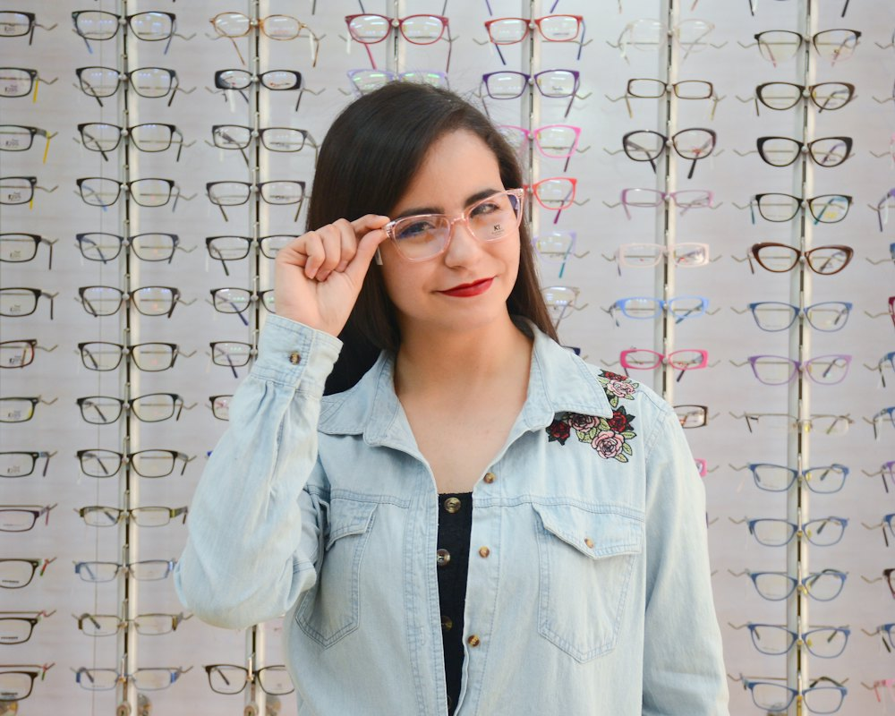
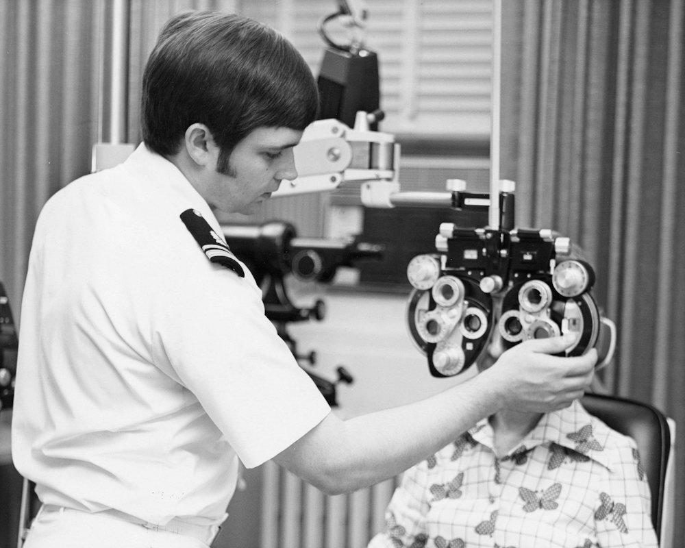
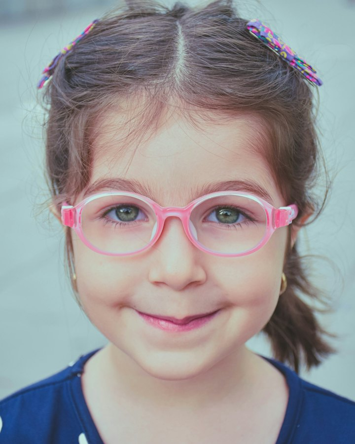

About Us
An independent, optometrist-led eye clinic and optical store on 12th Main, Indiranagar. Since 2012, every pair of glasses we make has started with a proper look at the eyes behind them.
- Independent since 2012
- 7 eye-care professionals
- Rated 4.9 on Google

Our story
Founded by an optometrist who refused to rush
Karthik Rao spent eight years in a busy hospital eye department, where every test had to fit into seven minutes. In 2012 he took two rooms on the first floor of 612, 12th Main Road and opened Lumora with one rule: an eye test lasts as long as your eyes need.
Those two rooms are now a full eye clinic, an in-house lens lab and a wall of 1,200 frames. The rule hasn’t changed — and neither has the address.
People don’t remember how fast their eye test was. They remember whether someone actually listened.
- 38,000+eye exams since 2012
- 9,400children screened free at school camps
- 1,200frames to try on in store
- 4.9 / 5average from 1,186 Google reviews
Milestones
Fourteen years on 12th Main
We’ve grown one careful step at a time, and we’ve never moved address.
-
Two chairs, one rule
Karthik Rao opens a two-chair eye clinic on the first floor of 612, 12th Main Road.
-
Our own lens lab
Edging lenses in-house means single-vision glasses are ready in three working days.
-
School eye camps
Free screening drives begin in Bengaluru schools — 9,400 children checked so far.
-
Lumora Atelier
Our own acetate frames, drawn in Indiranagar and hand-polished by a family workshop in Mumbai.
-
Specialty clinics
Myopia control, dry eye and keratoconus clinics for problems glasses alone can’t solve.
-
Today
A team of seven
Four optometrists and three dispensing opticians, with more than 38,000 eye exams behind us.
What we stand for
Four promises behind every appointment
Whoever you see and whatever you buy, these don’t change.
-
Eye health before eyewear
Every appointment screens for glaucoma, cataract and diabetic changes before anyone mentions frames.
-
Time, not targets
Our optometrists aren’t paid on sales. If your eyes need longer than the booked slot, they get it.
-
Prices on the tag
Anti-glare, UV400 and lifetime adjustments are already included, and the test fee comes off a complete pair.
-
Genuine, traceable frames
Branded frames come only from authorised Indian distributors, with the serial number printed on your invoice.
The team
The optometrists you’ll meet
Four specialists share one patient record, so whoever you see already has your scans and notes on screen.
-
Karthik Rao
Founder & clinical director
M.Optom, 22 years in practice. Leads glaucoma screening and complex prescriptions.
Speaks English, Kannada, Telugu
-
Sana Fernandes
Paediatric & myopia optometrist
B.Optom with a paediatric fellowship. Runs the children’s clinic and our school eye camps.
Speaks English, Konkani, Hindi
-
Arjun Menon
Contact lens specialist
B.Optom, FIACLE. Fits scleral and keratoconus lenses and trains first-time wearers.
Speaks English, Malayalam, Tamil
-
Priya Raghavan
Dry eye & low vision optometrist
M.Optom. Heads the dry eye clinic and low vision aids service.
Speaks English, Tamil, Kannada
Front of house: three dispensing opticians fit, adjust and repair every pair, and store manager Neha Kulkarni personally answers any concern within one working day.
Contact the team
Beyond the store
Good eyesight shouldn’t depend on what you can afford
Part of every working week goes to people who would never walk into an optical store.
-
Free school eye camps
Our paediatric team has screened 9,400 children in Bengaluru schools and followed up every child who needed glasses or treatment.
-
A second life for old frames
Frames traded in for ₹500 off a new pair are cleaned, re-glazed and given to people who can’t afford glasses.
-
Workplace eye camps
On-site screening for teams of 25 or more, with practical advice for long screen days.
Come and see us on 12th Main
Browse 1,200 frames, get a free adjustment or book a 20-minute eye test. Step-free entrance, with a lift to the first floor.